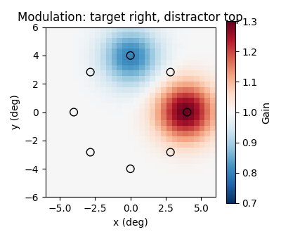
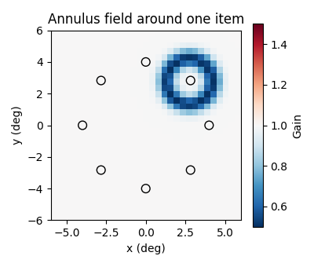

Note
Go to the end to download the full example code.
Gain fields: attention modulates population receptive fields¶
Does attending to a location, or ignoring a salient distractor there, change how strongly the stimulus at that location drives visual cortex? A gain-field PRF model answers this on the stimulus grid. On every trial a field around each task-relevant location multiplies the image, and each voxel’s ordinary 2D PRF pools the result:
\(W_{t\ell k}\) says which location \(\ell\) has role \(k\) on trial \(t\), \(\gamma_k\) is the gain of that role (shared by all voxels), and \(A\) is a Gaussian field of width \(\sigma\) centred on the location.
This example starts from scratch:
Simulate a population of 2D PRFs and a search display with 8 items.
Give every trial a target and a distractor location, and simulate single-trial responses with known gains.
Build the paradigm with
braincoder.stimuli.make_gain_field_paradigm().Fit the shared gains and the field width with the PRFs fixed.
Two fields at once (a sustained and a transient field with a tied width), on BOLD time courses with an HRF, and a field shape of your own.
See Gain fields (attention fields) for the full description of the model.
The stimulus grid and the search display¶
The grid is the set of pixels (in degrees) on which stimuli and receptive fields live. The display has 8 items on a ring of 4 degrees.
import numpy as np
import pandas as pd
import matplotlib.pyplot as plt
rng = np.random.default_rng(42)
x = np.linspace(-6, 6, 31)
gx, gy = np.meshgrid(x, x)
grid = np.stack([gx.ravel(), gy.ravel()], 1).astype(np.float32)
angles = np.arange(8) * 2 * np.pi / 8
item_positions = 4 * np.stack([np.cos(angles), np.sin(angles)], 1)
# One image per trial: all 8 items shown as discs of radius 0.8 degrees.
item_discs = (np.linalg.norm(grid[None] - item_positions[:, None], axis=2) < .8).astype(np.float32)
n_trials = 300
images = np.repeat(item_discs.sum(0, keepdims=True), n_trials, axis=0)
Per-trial roles¶
On every trial one item is the target and another one a distractor. A list
with one dictionary per trial maps each role to a location (an index into
item_positions; an (x, y) tuple works too).
roles = []
for _ in range(n_trials):
target, distractor = rng.choice(8, 2, replace=False)
roles.append({'target': int(target), 'distractor': int(distractor)})
roles[:3]
[{'target': 0, 'distractor': 6}, {'target': 3, 'distractor': 7}, {'target': 5, 'distractor': 0}]
The model and its paradigm¶
One line sets up the model: the grid, every location a field can sit on, and the names of the roles. Its paradigm holds the images and the role of every location on every trial.
from braincoder.models import GainFieldPRF2D
from braincoder.stimuli import make_gain_field_paradigm
model = GainFieldPRF2D(grid, item_positions, gain_labels=['target', 'distractor'])
print(model.parameter_labels)
paradigm = make_gain_field_paradigm(images, roles, item_positions, ['target', 'distractor'],
grid_coordinates=grid)
paradigm['field'].head()
['x', 'y', 'sd', 'baseline', 'amplitude', 'field_sigma', 'field_gain_target', 'field_gain_distractor']
Simulate single-trial responses¶
A population of 100 voxels with PRFs around the ring. The target gets a gain of +0.3 (30% more drive at its centre) and the distractor -0.2 (20% less).
n_voxels = 100
ecc, polar = rng.uniform(2, 6, n_voxels), rng.uniform(0, 2 * np.pi, n_voxels)
true_prfs = pd.DataFrame({'x': ecc * np.cos(polar), 'y': ecc * np.sin(polar),
'sd': rng.uniform(.8, 2., n_voxels), 'baseline': 0.,
'amplitude': rng.uniform(.5, 1.5, n_voxels)}).astype(np.float32)
true_field = dict(field_sigma=1.5, field_gain_target=.3, field_gain_distractor=-.2)
true_pars = model.add_field_parameters(true_prfs, **true_field)
import keras
keras.utils.set_random_seed(1)
betas = model.simulate(paradigm, true_pars, noise=.05)
betas.index = paradigm.index
The modulation field¶
get_modulated_images returns the images as the PRFs see them. With a
uniform image it shows the modulation \(M_t(g)\) itself: here for a
trial with the target at the right and the distractor at the top.
example = make_gain_field_paradigm(np.ones((1, len(grid))), [{'target': 0, 'distractor': 2}],
item_positions, ['target', 'distractor'], grid_coordinates=grid)
M = model.get_modulated_images(example, fitted).values[0].reshape(gx.shape)
fig, ax = plt.subplots(figsize=(4, 3.4))
im = ax.imshow(M, extent=[x[0], x[-1], x[0], x[-1]], origin='lower', cmap='RdBu_r', vmin=.7, vmax=1.3)
ax.scatter(*item_positions.T, facecolor='none', edgecolor='k', s=60)
ax.set_xlabel('x (deg)')
ax.set_ylabel('y (deg)')
ax.set_title('Modulation: target right, distractor top')
fig.colorbar(im, ax=ax, label='Gain')
fig.tight_layout()

Two fields on BOLD time courses¶
Fields can be combined. Below, a sustained field marks the location that is attended during a block, and a transient field responds to brief onsets at any location. The model is fitted to BOLD time courses, so it gets an HRF: the modulation acts on every frame before the HRF.
Two constraints, written as ties:
zero-sum: the gain at the attended location and the gains at the 3 others sum to zero, so a uniform change of the whole display is left to the PRFs (
unattended = -attended / 3);the transient field has the same width as the sustained field.
The transient field sits outside the clip at 0 (clamped=False).
from braincoder.hrf import SPMHRFModel
from braincoder.models import GainFieldPRF2DWithHRF, GainField
positions4 = item_positions[::2] # 4 locations
model2 = GainFieldPRF2DWithHRF(
grid, positions4, ['attended', 'unattended', 'onset'], hrf_model=SPMHRFModel(tr=1.5),
fields=[GainField('sustained', gain_labels=['attended', 'unattended']),
GainField('transient', gain_labels=['onset'], clamped=False)],
ties={'sustained_gain_unattended': {'sustained_gain_attended': -1 / 3},
'transient_sigma': 'sustained_sigma'})
print(model2.parameter_labels)
print('Free field parameters:', model2.field_parameter_labels(include_tied=False))
['x', 'y', 'sd', 'baseline', 'amplitude', 'sustained_sigma', 'sustained_gain_attended', 'sustained_gain_unattended', 'transient_sigma', 'transient_gain_onset']
Free field parameters: ['sustained_sigma', 'sustained_gain_attended', 'transient_gain_onset']
The images: a bar sweeping across the screen plus the 4 items. The weights
are an array W[t, location, role]: the attended location changes every
50 TRs, and onsets occur at random (the weight could also be the fraction of
a TR an onset was on).
T = 300
images2 = np.repeat(item_discs[::2].sum(0, keepdims=True), T, axis=0)
bar_x = np.linspace(-6, 6, 30)
images2 = np.maximum(images2, np.abs(grid[None, :, 0] - bar_x[np.arange(T) % 30, None]) < .75)
W = np.zeros((T, 4, 3), dtype=np.float32)
attended = np.repeat(rng.integers(4, size=T // 50), 50)
W[np.arange(T), attended, 0] = 1 # attended
W[:, :, 1] = 1 - W[:, :, 0] # unattended
W[:, :, 2] = rng.random((T, 4)) < .1 # onsets
paradigm2 = model2.make_paradigm(images2, W)
true2 = dict(sustained_sigma=1.5, sustained_gain_attended=.3, transient_gain_onset=-.4)
pars2 = model2.add_field_parameters(true_prfs, **true2)
keras.utils.set_random_seed(2)
bold = model2.simulate(paradigm2, pars2, noise=.005)
bold.index = paradigm2.index
fit2 = ParameterFitter(model2, bold, paradigm2).fit(
init_pars=model2.add_field_parameters(mapped_prfs, sustained_sigma=1.),
fixed_pars=model2.prf_parameter_labels(),
shared_pars=model2.field_parameter_labels(include_tied=False),
learning_rate=.02, max_n_iterations=1500, r2_atol=1e-7, progressbar=False)
print(pd.DataFrame({'true': pd.Series(model2.apply_ties(pars2).iloc[0][model2.field_parameter_labels()]),
'recovered': fit2.iloc[0][model2.field_parameter_labels()]}))
true recovered
sustained_sigma 1.5 1.500969
sustained_gain_attended 0.3 0.295600
sustained_gain_unattended -0.1 -0.098533
transient_sigma 1.5 1.500969
transient_gain_onset -0.4 -0.414639
A field shape of your own¶
A field shape is a FieldShape subclass: the names
of its parameters, their transforms (from unconstrained to native values) and
one profile method written with keras.ops. Here a ring around each
location, e.g. for surround suppression.
from keras import ops
from braincoder.models import FieldShape
class AnnulusField(FieldShape):
parameter_labels = ['radius', 'width']
transformations = ['softplus', 'softplus']
def profile(self, dx, dy, radius, width):
r = ops.sqrt(dx ** 2 + dy ** 2 + 1e-12)
return ops.exp(-(r - radius) ** 2 / (2 * width ** 2))
model3 = GainFieldPRF2D(grid, item_positions, ['distractor'],
fields=[GainField('ring', AnnulusField())])
print(model3.parameter_labels)
pars3 = model3.add_field_parameters(true_prfs.iloc[:1], ring_radius=1.5, ring_width=.4,
ring_gain_distractor=-.5)
example3 = make_gain_field_paradigm(np.ones((1, len(grid))), [{'distractor': 1}], item_positions,
['distractor'], grid_coordinates=grid)
M3 = model3.get_modulated_images(example3, pars3).values[0].reshape(gx.shape)
fig, ax = plt.subplots(figsize=(4, 3.4))
im = ax.imshow(M3, extent=[x[0], x[-1], x[0], x[-1]], origin='lower', cmap='RdBu_r', vmin=.5, vmax=1.5)
ax.scatter(*item_positions.T, facecolor='none', edgecolor='k', s=60)
ax.set_xlabel('x (deg)')
ax.set_ylabel('y (deg)')
ax.set_title('Annulus field around one item')
fig.colorbar(im, ax=ax, label='Gain')
fig.tight_layout()

['x', 'y', 'sd', 'baseline', 'amplitude', 'ring_radius', 'ring_width', 'ring_gain_distractor']
Fit it like any other field: its parameters (ring_radius, ring_width,
ring_gain_distractor) go into shared_pars. Several fields of different
shapes can be combined in one model, and GainFieldMixin
adds fields to other PRF kernels (e.g. a difference of Gaussians).
Total running time of the script: (0 minutes 37.261 seconds)